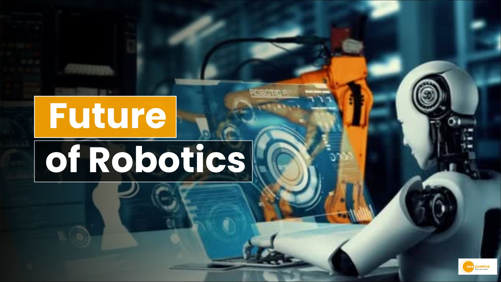
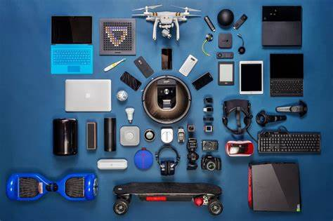
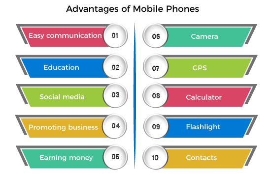
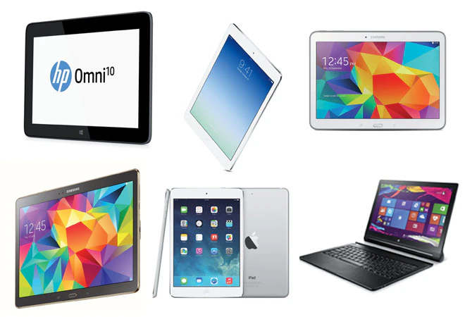
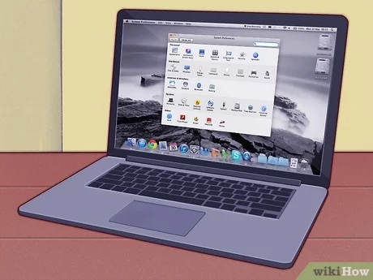

Welcome to my Techonology Blog! I'm Devanshee, a Software Engineer,
who loves to explore gadgets related topics, Join me on my journey to
discover amazing things related to technology and improve your
technology with blogs, images and videos.I hope you enjoy following
along on my blog and explore technology and embark a journey to a
technology and gadgets full of Life.
Everything You Need To Know About AI
Artificial intelligence is the simulation of human intelligence
processes by machines, especially computer systems
Learning. This aspect of AI programming involves acquiring data and
creating rules, known as algorithms, to transform it into actionable
information. These algorithms provide computing devices with
step-by-step instructions for completing specific tasks.
Reasoning. This aspect involves choosing the right algorithm to
reach a desired outcome.
Self-correction. This aspect involves algorithms continuously
learning and tuning themselves to provide the most accurate results
possible.
Creativity. This aspect uses neural networks, rule-based systems,
statistical methods and other AI techniques to generate new images,
text, music, ideas and so on.
Machines Are Known As Robots
Robotics combines science, engineering, and technology to design,
construct, operate, and use machines programmed to replicate,
substitute, or assist humans in completing tasks of varying
complexity.

AMR:Autonomous Mobile Robots (AMRs) can support many tasks,
including delivering items, carrying out safety and security checks,
inventory automation, rescue missions, crop harvesting, and even
space exploration.
AGV:Automated Guided Vehicles (AGVs) are movable robots capable of
navigating mapped routes via wires on a floor, radio waves,etc.
These robots have several applications, including transporting heavy
materials in factories and warehouses.
Articulated Robot: Is rotary joints that can range from simple
two-jointed structures to complex systems of multiple interacting
joints and materials. The articulated robot is a typical type of
industrial robot and often resembles a human arm.
Cobot:A cobot is a contracted term for a collaborative robot. These
robots work side-by-side with human workers. They differ from other
robots because their function is not intended to do work in place of
human employees.
Impact Of Gadgets In Our Life
A gadget is a mechanical device or any ingenious article. Gadgets are
sometimes referred to as gizmos. In a 1965 essay, Reyner Banham
describes the cordless electric razor as an example of "a gizmo, a
gadget, a gimmick.

Facilitates independent learning: The help of parents and
instructors is no longer necessary for pupils to learn. It has
proven to be a wealth of knowledge that the internet offers.
Improvement of Communication: It used to take days or even months
for letters to be delivered when people used to communicate by
writing them; now, email has made things incredibly simple.
Enhanced cognitive abilities: Whether you think of modern technology
as a blessing or a curse, the fact is that it improves cognitive
abilities. These skills are processing new information, remembering
things, using logic, and making connections between things.
Mobile Phone Has Completely Changed The Life Of An Individual
A mobile phone is a personal communication device used to make and
receive calls, send and receive messages, access the internet and
perform other tasks via a wireless connection. Mobile phones have
become an integral part of our lives..

Easy Communication:Mobile made communication easier, as just by
pressing some keys on mobile, we can contact our friends, family and
others at any time. Mobile also gives us a facility to contact our
fellow person with voice calls, video calls, text messages etc.
Education: Nowadays, most colleges, institutions, and schools are
offering online education with the proper study material that can be
in the form of images, photos, text, pdf, etc.
GPS: Easy to track the current location and destination.
Online Banking:checking the account status, and transferring of
money from one bank to another. We can also pay electricity bills
and others via mobile phones.
Wireless Computing Device
Tablets allow users to access the Internet, read and send e-mail,
watch videos, listen to music, and read electronic books, or e-books.
They also run computer programs called applications, or apps.

Convertible Tablets: display that rotates 180 degrees and can be
folded to close, screen facing up, over an integrated hardware
keyboard Convertible models may allow user input natural handwriting
with a stylus or digital pen, or through a screen-based software
keyboard.
Hybrid Tablets: a hybrid notebook or a 2-in-1 laptop, a hybrid
tablet is like a regular notebook, but has a removable display that
functions independently as a slate.
Rugged tablets: a rugged tablet is usually encased in a thick
protective shell and has a shock-protected hard drive.
Laptop Has An All-In-One Design,
Laptops usually have a clamshell design, in which the screen is
located on the interior of the upper lid and the keyboard is located
on the interior of the lower lid.

Touchpad: A touchpad—also called a trackpad—is a touch-sensitive pad
that lets you control the pointer by making a drawing motion with
your finger.
Battery: Every laptop has a battery, which allows you to use the
laptop when it's not plugged in..
Ports: Most laptops have the same types of ports found on desktop
computers (such as USB), although they usually have fewer ports to
save space.
Price: Generally speaking, laptops tend to be more expensive than a
desktop computer with the same internal components.
About Me
Hi there, I'm Devanshee and I created
this blog to share my passion for technology!
As a software engineer by profession, technology and gadgets provides
the perfect outlet for my curiosity. This blog allows with me to connect
with like minded travels while documenting my own journey around the
technology which I discovered in my entire life.
I hope my stories, photos,and videos will insipe you to step out of your
confort zone, explore new technology, and create your own memorable
experiences into technology. Thanks for joining me.